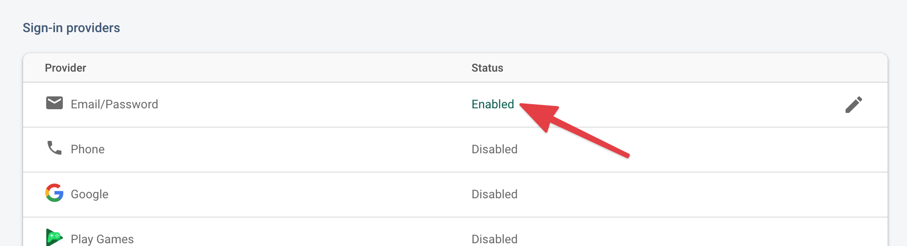

We're now familar with Firebase and know that it contains a variety of services – e.g. Cloud Firestore – now we'll have a look into Authentication.
The goal of Firebase Authentication is to allow us (developers) the ability to add user login to our JavaScript web applications.
We're going to be using two separate libraries that are available from Firebase – one to add the back-end Authentication service, and another helper library called FirebaseUI that will help us to add a user interface around the Authentication service. This is easily done by adding these script tags to our HTML:
<!-- The Firebase Authentication module -->
<script src="https://www.gstatic.com/firebasejs/8.2.7/firebase-auth.js"></script>
<!-- FirebaseUI Auth -->
<script src="https://www.gstatic.com/firebasejs/ui/4.7.3/firebase-ui-auth.js"></script>
We're also going to add a CSS file for FirebaseUI:
<link type="text/css" rel="stylesheet" href="https://www.gstatic.com/firebasejs/ui/4.7.3/firebase-ui-auth.css" />
To be clear, we don't need FirebaseUI – we can build code around Firebase Authentication to fully customize the login interface and flow – but are using it for the sake of simplicity.
Now, we're ready to add a user login flow and user interface to our application. Adding these scripts to our application does two things:
Let's examine how we might add a simple login page to our application. To enable the Firebase UI for auth, we can simply add this code to run when our page loads:
// Initializes FirebaseUI Auth
let ui = new firebaseui.auth.AuthUI(firebase.auth())
// FirebaseUI configuration
let authUIConfig = {
signInOptions: [
firebase.auth.EmailAuthProvider.PROVIDER_ID
],
signInSuccessUrl: 'todo.html'
}
// Starts FirebaseUI Auth
ui.start('.firebaseui-auth-container', authUIConfig)
This initializes Firebase UI Auth, provides a configuration object, and places the login form in a spot on the page of our choosing – in this example, we're using an empty div on our page with the class name firebaseui-auth-container. This adds a login UI and allows a user to login to an existing user account or create a new user account. The signInOptions in the FirebaseUI configuration should mirror the allowed sign-in methods in our Firebase console. In this case, we're able to use firebase.auth.EmailAuthProvider.PROVIDER_ID because we've got the "Email/Password" sign-in provider turned on in our Firebase backend, as shown below.

If we turn the "Google" sign-in provider on, because we want to use Google sign-in as an option in our application, we also have to modify the signInOptions Array to make it work, i.e.
// Initializes FirebaseUI Auth
let ui = new firebaseui.auth.AuthUI(firebase.auth())
// FirebaseUI configuration
let authUIConfig = {
signInOptions: [
firebase.auth.EmailAuthProvider.PROVIDER_ID
firebase.auth.GoogleAuthProvider.PROVIDER_ID
],
signInSuccessUrl: 'todo.html'
}
// Starts FirebaseUI Auth
ui.start('.firebaseui-auth-container', authUIConfig)
Now that we've used FirebaseUI to complete our login flow – that is, either we sign-in to an existing user account or created a new user account, we now have access to the firebase.auth() Object. This Object gives us a few interesting pieces of functionality and information:
| firebase.auth().currentUser | An Object which contains information on the currently logged-in user, such as name, email address, and user ID (uid). Returns null if there is no currently signed-in user. |
| firebase.auth().signOut() | If a user is signed-in, sign out and sets the currentUser to null. |
| firebase.auth().onAuthStateChanged(function (user) { ... }) | An event listener that waits for a change in user sign-in. Accepts a function as a parameters that describes what to do when that happens. |
Generally speaking, we should subscribe to the firebase.auth().onAuthStateChanged listener as the first thing on any page that requires authentication. All of our subsequent functionality should reside within that listener.